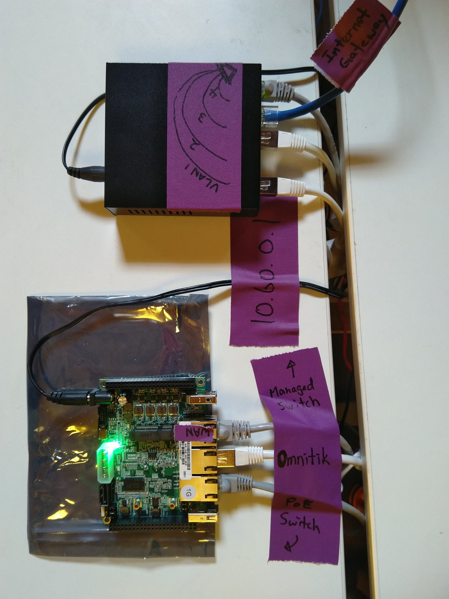

2.2 VLAN Managed Switch
This device is only necessary for relay and gateway nodes.
We configured the ESPRESSObin to have only one wan port. Babel needs to distinguish different network interfaces in order to create the intended network topology and compute route metrics between the different links, then make routing decisions accordingly. So we will make virtual interfaces by tagged each mesh radio with a different VLAN ID, essentially multiplexing differently tagged packets into wan which then seperates them out on wan.1 wan.2 wan.3 and wan.4 on the ESPRESSObin, and what Babel sees are seperate network interfaces as if the ESPRESSObin has 4 wan ports.

NETGEAR GS305E Gigabit Managed Switch
-
Connect to the GS305E default IP and login to the admin interface
-
Enable
Basic 802.1Q VLAN Statusthen configure the following VLAN ID settings:port 1 2 3 4 5 VLAN ID 1 2 3 4 all -
Apply the configurations, then wait 30 seconds to ensure the changes are saved
-
Connect
port 5to the ESPRESSObinwanport, and use the VLAN tagged ports for point-to-point radios or ethernet cables that connect mesh nodes -
If this is an Internet Gatway node, connect your Internet backhaul to
port 4(since we havewan.4configured to be the Internet route for Internet Gateway ESPRESSObins)